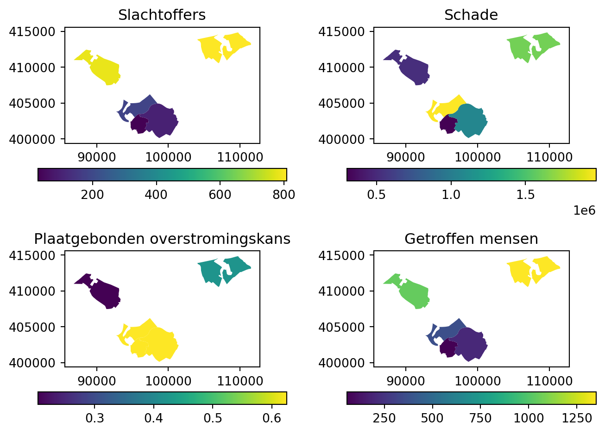
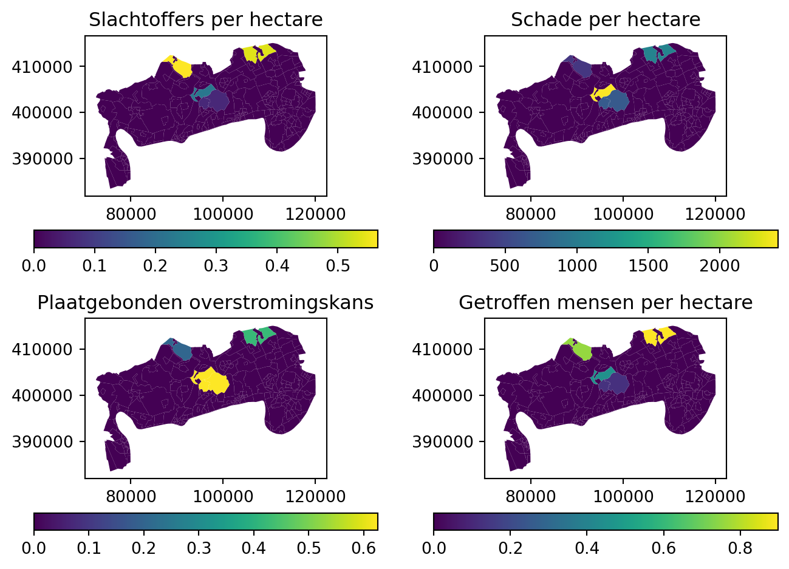

# initialiseer de (toolbox continu inzicht) modules
from pathlib import Path
from toolbox_continu_inzicht.base.config import Config
from toolbox_continu_inzicht.base.data_adapter import DataAdapterReal-time of what-if overstromingsrisico’s
Risico’s worden berekend door kansen te combineren met gevolgen. In de toolbox Continu Inzicht worden fragilitycurves gebruikt om de conditionele kans op falen van een sectie (per faalmechanisme) te bepalen. De gevolgen van een overstroming worden bepaald met behulp van overstromingsscenarioberekeningen, ook wel aangeduid met scenario’s. Uit een overstroomd gebied worden gevolgen afgeleid zoals economische schade, slachtoffers, en getroffenen.
Door conditionele kansen met gevolgen te combineren kunnen conditionele risico’s worden bepaald, bestaande uit de verwachte economische schade van een gebied, het verwachte aantal slachtoffers en/of getroffen in een gebied en/of de plaatsgebonden overstromingskans van een locatie.
Deze risico’s kunnen helpen om prioriteiten te stellen tijdens een hoogewatern, waarbij er niet alleen een kans of een afzonderlijk gevolg wordt beschouwd.
Om de scenarios te kunnen combineren moeten er een aantal stappen worden doorlopen: - Omrekenen van dijkvakkansen naar trajectdeelkansen (CalculateFloodScenarioProbability) - Belasting per deeltraject bepalen (LoadFromFloodScenarioProbabilit) - Met de belasting een bijpassende overstromingscenario selecteren (SelectFloodScenarioFromLoad) - Van het scenario en de curve een geagregeerd risico bepalen (CalculateFloodRisk)
CalculateFloodScenarioProbability
Dit voorbeeld laat zien hoe met behulp van de CalculateFloodScenarioProbability scenariokansen berekend worden uit kansen per sectie en per faalmachanisme.
Eerst worden de kansen per sectie en faalmachanisme ingeladen, daarna worden deze gecombineerd naar een kans over alle secties (voorheen aangeduid als de ringkans) per faalmechanisme. Daarna worden de kansen over alle secties per faalmechanisme gecombineerd naar 1 kans over alle secties en over alle faalmechanismen.
Deze volgorde (eerst combineren over alle sectie en daarna over alle faalmechanismen) is bewust gekozen omdat per faalmechanisme verschillende met andere correlaties wordt gerekend. Voor het faalmechanisme GEKB wordt verondersteld dat alle secties volledig afhankelijk falen en voor de overige faalmechanismen wordt verondersteld dat de secties volledig onafhankelijk falsen. Door gekozen volgorde bij het combineren van faalkansen aan te houden, kan dit onderscheid geborgd worden. Tussen de verschillende faalmechanismen wordt volledige onafhankelijkheid verondersteld. N.B. in een volledige probabilistische berekening (waarbij niet met fragility curves wordt gerekend) kan de daadwerkelijke correlatie worden berekend en is het ook mogelijk om te rekenen met gedeeltelijke afhankelijkheid. Dat is in een werkwijze met fragilitycurves niet mogelijk.
GlobalVariables:
rootdir: "data_sets/7.flood_scenarios"
moments: [-24,0,24,36]
DataAdapter:
default_options:
csv:
sep: ","
input_failuremechanism:
type: csv
file: "rekentest_failuremechanism.csv"
input_probabilities_failuremechanisme_sections:
type: csv
file: "rekentest_probabilities_failuremechanisme_sections.csv"
input_sections_in_segment:
type: csv
file: "rekentest_sections_in_segment.csv"
output_scenario_failure_prob_segments:
type: csv
index: false
file: "hidden_rekentest_scenario_failure_prob_segments.csv"
output_combined_failure_prob_all_sections:
type: csv
index: false
file: "hidden_rekentest_combined_failure_prob_all_sections.csv"Op dit momemt moet het voorbeeld nog worden uitgebreid met: - loop over momenten inbouwen - Mee nemen van een lengte-effect factor bij het bepalen van de faalkans per segment
# laadt de configuratie en initialiseer de data adapter
path = Path.cwd() / "data_sets" / "7.flood_scenarios"
config = Config(
config_path=path / "rekentest_calculate_flood_scenario_probability.yaml"
)
config.lees_config()
data_adapter = DataAdapter(config=config)# druk een overzicht van de faalmechanismen af
data_adapter.input("input_failuremechanism")| failuremechanism_id | name | description | |
|---|---|---|---|
| 0 | 1 | COMB | Combinatie faalmechanismen |
| 1 | 2 | GEKB | Overloop en overslag |
| 2 | 3 | STPH | Opbarsten en piping |
| 3 | 4 | STBI | Stabiliteit binnenwaarts dijken |
| 4 | 5 | HTKW | Overloop en overslag langsconstructies |
| 5 | 6 | STKWl | Stabiliteit langsconstructies |
| 6 | 7 | PKW | Piping langsconstructies |
# druk een overzicht van de secties per segment af
data_adapter.input("input_sections_in_segment")| section_id | segment_id | |
|---|---|---|
| 0 | 34002010 | 7 |
| 1 | 34002011 | 7 |
| 2 | 34002012 | 7 |
| 3 | 34003023 | 2 |
| 4 | 34003024 | 2 |
| 5 | 34003025 | 2 |
# druk een overzicht van de faalkansen per sectie en faalmechanisme af
data_adapter.input("input_probabilities_failuremechanisme_sections")| section_id | failuremechanism_id | failure_probability | |
|---|---|---|---|
| 0 | 34003023 | 1 | 1.990687e-01 |
| 1 | 34003024 | 1 | 2.726964e-02 |
| 2 | 34003025 | 1 | 2.972052e-02 |
| 3 | 34002010 | 1 | 4.982228e-01 |
| 4 | 34002011 | 1 | 4.685261e-01 |
| 5 | 34002012 | 1 | 4.755186e-01 |
| 6 | 34003023 | 2 | 1.690000e-14 |
| 7 | 34003024 | 2 | 1.690000e-14 |
| 8 | 34003025 | 2 | 1.690000e-14 |
| 9 | 34002010 | 2 | 4.685261e-01 |
| 10 | 34002011 | 2 | 4.685261e-01 |
| 11 | 34002012 | 2 | 4.685261e-01 |
| 12 | 34003023 | 3 | 6.034349e-03 |
| 13 | 34003024 | 3 | 2.726964e-02 |
| 14 | 34003025 | 3 | 2.972052e-02 |
| 15 | 34002010 | 3 | 5.587615e-02 |
| 16 | 34002011 | 3 | 0.000000e+00 |
| 17 | 34002012 | 3 | 1.315684e-02 |
| 18 | 34003023 | 4 | 1.942062e-01 |
| 19 | 34003024 | 4 | 0.000000e+00 |
| 20 | 34003025 | 4 | 0.000000e+00 |
| 21 | 34002010 | 4 | 0.000000e+00 |
| 22 | 34002011 | 4 | 0.000000e+00 |
| 23 | 34002012 | 4 | 0.000000e+00 |
# importeer en initialiseer de module voor het berekenen van de scenariokansen per segment
from toolbox_continu_inzicht.flood_scenarios import CalculateFloodScenarioProbability# maak een instantie van de klasse CalculateFloodScenarioProbability
calculate_flood_scenario_probability = CalculateFloodScenarioProbability(
data_adapter=data_adapter
)# voer de berekening van de scenariokansen uit
calculate_flood_scenario_probability.run(
input=[
"input_failuremechanism",
"input_probabilities_failuremechanisme_sections",
"input_sections_in_segment",
],
output=[
"output_scenario_failure_prob_segments",
"output_combined_failure_prob_all_sections",
],
)# druk een overzicht van de scenariokansen faalkansen per segment en over alle faalmechanismen af
calculate_flood_scenario_probability.df_out_scenario_failure_prob_segments| segment_id | scenario_failure_probability | |
|---|---|---|
| 1 | 2 | 0.203910 |
| 0 | 7 | 0.421769 |
# druk een overzicht van de gecombineerde faalkansen over alle secties en over alle faalmechanismen af
calculate_flood_scenario_probability.df_out_combined_failure_prob_all_sections| failuremechanism_id | combined_failure_probability | |
|---|---|---|
| 0 | 1 | 0.625679 |
LoadFromFloodScenarioProbability
Voor het bepalen van de risico van een overstroming is het nodig om een bijpassend overstromingsscenario te selecteren. Er zijn meerdere overstromingsscenario’s beschikbaar die verschillende hydraulische belastingen representeren.
Afhankelijk van de scenariokans van een deeltraject (segment) kan een bijpassend overstromingsscenario worden geselecteerd. Hiertoe is het nodig om de hydraulische belasting per deeltraject te bepalen. Dat kan met behulp van de fragilitycurves. Hiertoe is het noodzakelijk om 1 representatieve fragilitycurve per deeltraject te selecteren. Dat doen we door voor elk deeltraject (segment) 1 sectie te selecteren. De fragilitycurve van deze sectie wordt dan gebruikt om de scenariekans van het deeltraject (segement) om te zetten in een hydraulische belasting, die daarna gebruik kan worden om een bijpassend overstromingsscenario te selecteren voor het deeltraject (segment).
GlobalVariables:
rootdir: "data_sets/7.flood_scenarios"
moments: [ -24, 0, 24, 36 ]
LoadFromFloodScenarioProbability:
failuremechanism_id_combined: 1
DataAdapter:
default_options:
csv:
sep: ","
input_scenario_failure_prob_segments:
type: csv
file: "hidden_rekentest_scenario_failure_prob_segments.csv"
input_section_to_segment:
type: csv
file: "rekentest_section_to_segment.csv"
input_section_fragility_curves:
type: csv
file: "rekentest_fragilitycurves.csv"
output_scenario_loads:
type: csv
path: "hidden_rekentest_scenario_loads.csv"Dit is specifiek voor een moment, over meerdere momenten loopen moet op een hoger viveau.
# laadt de configuratie en initialiseer de data adapter
path = Path.cwd() / "data_sets" / "7.flood_scenarios"
config = Config(
config_path=path / "rekentest_load_from_flood_scenario_probability.yaml"
)
config.lees_config()
data_adapter = DataAdapter(config=config)# druk een overzicht van de scenariokansen per segment af
data_adapter.input("input_scenario_failure_prob_segments")| segment_id | scenario_failure_probability | |
|---|---|---|
| 0 | 2 | 0.203910 |
| 1 | 7 | 0.421769 |
# druk een overzicht van de mapping van sectie naar segment af
data_adapter.input("input_section_to_segment")| segment_id | section_id | length | measure_id | |
|---|---|---|---|---|
| 0 | 2 | 34003024 | 3346.94 | 0 |
| 1 | 7 | 34002010 | 2610.69 | 0 |
# druk een overzicht van de fragiliteitscurves per faalmechanisme af
data_adapter.input("input_section_fragility_curves")| section_id | failuremechanism_id | measure_id | hydraulicload | failure_probability | |
|---|---|---|---|---|---|
| 0 | 34003024 | 1 | 0 | 3.15 | 0.000216 |
| 1 | 34003024 | 1 | 0 | 3.20 | 0.000295 |
| 2 | 34003024 | 1 | 0 | 3.25 | 0.000461 |
| 3 | 34003024 | 1 | 0 | 3.30 | 0.000627 |
| 4 | 34003024 | 1 | 0 | 3.35 | 0.000959 |
| ... | ... | ... | ... | ... | ... |
| 2436 | 34002011 | 1 | 0 | 5.30 | 0.999367 |
| 2437 | 34002011 | 1 | 0 | 5.35 | 0.999550 |
| 2438 | 34002011 | 1 | 0 | 5.40 | 0.999676 |
| 2439 | 34002011 | 1 | 0 | 5.45 | 0.999764 |
| 2440 | 34002011 | 1 | 0 | 5.50 | 0.999827 |
2441 rows × 5 columns
# importeer en initialiseer de module voor het bepalen van de belastingen vanuit scenariokansen
from toolbox_continu_inzicht.flood_scenarios import LoadFromFloodScenarioProbability# voer de bepaling van de hydraulische belastingen uit
load_from_flood_scenario_probability = LoadFromFloodScenarioProbability(
data_adapter=data_adapter
)
load_from_flood_scenario_probability.run(
input=[
"input_scenario_failure_prob_segments",
"input_section_to_segment",
"input_section_fragility_curves",
],
output="output_scenario_loads",
)# druk een overzicht van de belastingen overeenkomstig de scenariokansen (per segment) af
load_from_flood_scenario_probability.df_out_scenario_loads| hydraulicload | |
|---|---|
| segment_id | |
| 2 | 4.063309 |
| 7 | 4.592589 |
SelectFloodScenarioFromLoad
Voor het bepalen van de risico van een overstroming is het nodig om een bijpassend overstromingsscenario te selecteren. Er zijn meerdere overstromingsscenario’s beschikbaar die verschillende hydraulische belastingen representeren. Per scenario is een hydraulische belasting (per deeltraject) bepaald. Met deze hydraulische belasting kan een bijpassend overstromingsscenario geselcteerd worden voor het deeltraject (segment).
GlobalVariables:
rootdir: "data_sets/7.flood_scenarios"
moments: [ -24, 0, 24, 36 ]
DataAdapter:
default_options:
csv:
sep: ","
input_scenarios_loads:
type: csv
path: "hidden_rekentest_scenario_loads.csv"
input_consequences_loads:
type: csv
path: "rekentest_consequences_loads.csv"
output_scenario_consequences_grids:
type: csv
path: "hidden_rekentest_scenario_consequences_grids.csv"# laadt de configuratie en initialiseer de data adapter
path = Path.cwd() / "data_sets" / "7.flood_scenarios"
config = Config(config_path=path / "rekentest_select_flood_scenario_from_load.yaml")
config.lees_config()
data_adapter = DataAdapter(config=config)# druk een overzicht van de belastingen overeenkomstig de scenariokansen (per segment) af
data_adapter.input("input_scenarios_loads")| segment_id | hydraulicload | |
|---|---|---|
| 0 | 2 | 4.063309 |
| 1 | 7 | 4.592589 |
# druk een overzicht van de gevolgen voor verschillende hydraulische belastingniveau's af
data_adapter.input("input_consequences_loads")| segment_id | section_id | hydraulicload_upperboundary | waterdepth_grid | casualties_grid | damage_grid | flooding_grid | affected_people_grid | |
|---|---|---|---|---|---|---|---|---|
| 0 | 2 | 34003024 | 3.300 | NaN | NaN | NaN | NaN | NaN |
| 1 | 2 | 34003024 | 3.497 | 2_waterdiepteTP-1D.asc | 2_slachtoffersTP-1D.asc | 2_schadeTP-1D.asc | 2_nattevoetenTP-1D.asc | 2_getroffenenTP-1D.asc |
| 2 | 2 | 34003024 | 4.723 | 2_waterdiepteTP.asc | 2_slachtoffersTP.asc | 2_schadeTP.asc | 2_nattevoetenTP.asc | 2_getroffenenTP.asc |
| 3 | 2 | 34003024 | 4.930 | 2_waterdiepteTP+1D.asc | 2_slachtoffersTP+1D.asc | 2_schadeTP+1D.asc | 2_nattevoetenTP+1D.asc | 2_getroffenenTP+1D.asc |
| 4 | 7 | 34002010 | 3.400 | NaN | NaN | NaN | NaN | NaN |
| 5 | 7 | 34002010 | 3.603 | 7_waterdiepteTP-1D.asc | 7_slachtoffersTP-1D.asc | 7_schadeTP-1D.asc | 7_nattevoetenTP-1D.asc | 7_getroffenenTP-1D.asc |
| 6 | 7 | 34002010 | 4.811 | 7_waterdiepteTP.asc | 7_slachtoffersTP.asc | 7_schadeTP.asc | 7_nattevoetenTP.asc | 7_getroffenenTP.asc |
| 7 | 7 | 34002010 | 5.143 | 7_waterdiepteTP+1D.asc | 7_slachtoffersTP+1D.asc | 7_schadeTP+1D.asc | 7_nattevoetenTP+1D.asc | 7_getroffenenTP+1D.asc |
# importeer en initialiseer de module voor het bepalen van de bijbehorende scenario's vanuit belastingen
from toolbox_continu_inzicht.flood_scenarios import SelectFloodScenarioFromLoad# voer de bepaling van het bijbehorende gevolggrid uit
select_flood_scenario_from_load = SelectFloodScenarioFromLoad(data_adapter=data_adapter)
select_flood_scenario_from_load.run(
input=[
"input_scenarios_loads",
"input_consequences_loads",
],
output="output_scenario_consequences_grids",
)# druk een overzicht van de bijbehorende gevolgen per scenario af
select_flood_scenario_from_load.df_out_scenario_consequences_grids| segment_id | section_id | hydraulicload_upperboundary | waterdepth_grid | casualties_grid | damage_grid | flooding_grid | affected_people_grid | |
|---|---|---|---|---|---|---|---|---|
| 2 | 2 | 34003024 | 4.723 | 2_waterdiepteTP.asc | 2_slachtoffersTP.asc | 2_schadeTP.asc | 2_nattevoetenTP.asc | 2_getroffenenTP.asc |
| 6 | 7 | 34002010 | 4.811 | 7_waterdiepteTP.asc | 7_slachtoffersTP.asc | 7_schadeTP.asc | 7_nattevoetenTP.asc | 7_getroffenenTP.asc |
Alternatief: keuze uit twee scenarios
Standaard wordt er per scenariokans, één overstromingsscenario geselecteerd op basis van de hydraulische belasting. Met de parameter return_two_scenarios kan ervoor gekozen worden om twee overstromingsscenarios te selecteren. De gebruiker kan hiermee zelf bepalen welk scenario hij wil gebruiken voor de risico berekening. Of eventueel de gemiddelde schade van de twee scenario’s gebruiken, of beide tonen.
GlobalVariables:
rootdir: "data_sets/7.flood_scenarios"
moments: [ -24, 0, 24, 36 ]
SelectFloodScenarioFromLoad:
return_two_scenarios: True
DataAdapter:
default_options:
csv:
sep: ","
input_scenarios_loads:
type: csv
path: "hidden_rekentest_scenario_loads.csv"
input_consequences_loads:
type: csv
path: "rekentest_consequences_loads.csv"
output_scenario_consequences_grids:
type: csv
path: "hidden_rekentest_scenario_consequences_grids.csv"# laadt de configuratie en initialiseer de data adapter
path = Path.cwd() / "data_sets" / "7.flood_scenarios"
config = Config(
config_path=path / "rekentest_select_flood_scenario_from_load_two_scenarios.yaml"
)
config.lees_config()
data_adapter = DataAdapter(config=config)# druk een overzicht van de belastingen overeenkomstig de scenariokansen (per segment) af
data_adapter.input("input_scenarios_loads")| segment_id | hydraulicload | |
|---|---|---|
| 0 | 2 | 4.063309 |
| 1 | 7 | 4.592589 |
# druk een overzicht van de gevolgen voor verschillende hydraulische belastingniveau's af
data_adapter.input("input_consequences_loads")| segment_id | section_id | hydraulicload_upperboundary | waterdepth_grid | casualties_grid | damage_grid | flooding_grid | affected_people_grid | |
|---|---|---|---|---|---|---|---|---|
| 0 | 2 | 34003024 | 3.300 | NaN | NaN | NaN | NaN | NaN |
| 1 | 2 | 34003024 | 3.497 | 2_waterdiepteTP-1D.asc | 2_slachtoffersTP-1D.asc | 2_schadeTP-1D.asc | 2_nattevoetenTP-1D.asc | 2_getroffenenTP-1D.asc |
| 2 | 2 | 34003024 | 4.723 | 2_waterdiepteTP.asc | 2_slachtoffersTP.asc | 2_schadeTP.asc | 2_nattevoetenTP.asc | 2_getroffenenTP.asc |
| 3 | 2 | 34003024 | 4.930 | 2_waterdiepteTP+1D.asc | 2_slachtoffersTP+1D.asc | 2_schadeTP+1D.asc | 2_nattevoetenTP+1D.asc | 2_getroffenenTP+1D.asc |
| 4 | 7 | 34002010 | 3.400 | NaN | NaN | NaN | NaN | NaN |
| 5 | 7 | 34002010 | 3.603 | 7_waterdiepteTP-1D.asc | 7_slachtoffersTP-1D.asc | 7_schadeTP-1D.asc | 7_nattevoetenTP-1D.asc | 7_getroffenenTP-1D.asc |
| 6 | 7 | 34002010 | 4.811 | 7_waterdiepteTP.asc | 7_slachtoffersTP.asc | 7_schadeTP.asc | 7_nattevoetenTP.asc | 7_getroffenenTP.asc |
| 7 | 7 | 34002010 | 5.143 | 7_waterdiepteTP+1D.asc | 7_slachtoffersTP+1D.asc | 7_schadeTP+1D.asc | 7_nattevoetenTP+1D.asc | 7_getroffenenTP+1D.asc |
# importeer en initialiseer de module voor het bepalen van de bijbehorende scenario's vanuit belastingen
from toolbox_continu_inzicht.flood_scenarios import SelectFloodScenarioFromLoad# voer de bepaling van het bijbehorende gevolggrid uit
select_flood_scenario_from_load = SelectFloodScenarioFromLoad(data_adapter=data_adapter)
select_flood_scenario_from_load.run(
input=[
"input_scenarios_loads",
"input_consequences_loads",
],
output="output_scenario_consequences_grids",
)# druk een overzicht van de bijbehorende gevolgen per scenario af
# TODO verwijder de index kolom in de CSV output
select_flood_scenario_from_load.df_out_scenario_consequences_grids| segment_id | section_id | hydraulicload_upperboundary | waterdepth_grid | casualties_grid | damage_grid | flooding_grid | affected_people_grid | |
|---|---|---|---|---|---|---|---|---|
| 1 | 2 | 34003024 | 3.497 | 2_waterdiepteTP-1D.asc | 2_slachtoffersTP-1D.asc | 2_schadeTP-1D.asc | 2_nattevoetenTP-1D.asc | 2_getroffenenTP-1D.asc |
| 2 | 2 | 34003024 | 4.723 | 2_waterdiepteTP.asc | 2_slachtoffersTP.asc | 2_schadeTP.asc | 2_nattevoetenTP.asc | 2_getroffenenTP.asc |
| 5 | 7 | 34002010 | 3.603 | 7_waterdiepteTP-1D.asc | 7_slachtoffersTP-1D.asc | 7_schadeTP-1D.asc | 7_nattevoetenTP-1D.asc | 7_getroffenenTP-1D.asc |
| 6 | 7 | 34002010 | 4.811 | 7_waterdiepteTP.asc | 7_slachtoffersTP.asc | 7_schadeTP.asc | 7_nattevoetenTP.asc | 7_getroffenenTP.asc |
CalculateFloodRisk
Het (conditionele) risico wordt bepaald door de (conditionele) kans te combineren met het gevolg. In dit geval worden de gevolgen van een overstroming gecombineerd met de scenariokans van een deeltraject (segment).
Met behulp van de CalculateFloodRisk module worden risico’s berekend voor 4 verschillende risicomate: (1) verwachte economische schade, (2) verwacht aantal slachtoffers, (3) verwacht aantal getroffenen, en (4) plaatsgebonden overstromingskans.
In eerste instantie wordt het risico berekend per gridcel. Daarna worden de risico’s geaggregeerd naar gebieden die gedefinieerd zijn in een shape-bestand.
GlobalVariables:
rootdir: "data_sets/7.flood_scenarios"
moments: [ -24, 0, 24, 36 ]
CalculateFloodRisk:
aggregate_methods: # dit zijn de standaard aggregatie-methoden per risicomaat (kunnen worden overschreven in de config)
casualties: sum
damage: sum
flooding: median
affectedpeople: sum
waterdepth: sum
per_hectare: False
DataAdapter:
default_options:
csv:
sep: ","
Index: False
input_scenario_failure_prob_segments:
type: csv
path: "hidden_rekentest_scenario_failure_prob_segments.csv"
input_scenario_consequences_grids:
type: csv
path: "hidden_rekentest_scenario_consequences_grids.csv"
input_areas_to_aggregate:
type: shape
path: "rekentest_areas_to_aggregate.geojson"
flood_risk_local_file:
type: flood_risk_local_file
path: '' # gebruik de data_dir
scenario_path: "flood_scenarios" # en een map dieper kijk in de floodscenarios dir
#abs_path_user: "tests/src/flood_scenarios/data_sets/flood_scenarios" # dit kan ook gebruikt worden
output_flood_risk_results:
type: csv
path: "hidden_rekentest_flood_risk_results.csv"# laadt de configuratie en initialiseer de data adapter
path = Path.cwd() / "data_sets" / "7.flood_scenarios"
config = Config(config_path=path / "rekentest_calculate_flood_risk.yaml")
config.lees_config()
data_adapter = DataAdapter(config=config)# druk een overzicht van de scenariokansen per segment af
data_adapter.input("input_scenario_failure_prob_segments")| segment_id | scenario_failure_probability | |
|---|---|---|
| 0 | 2 | 0.203910 |
| 1 | 7 | 0.421769 |
# druk een overzicht van de bijbehorende gevolgen per scenario af
data_adapter.input("input_scenario_consequences_grids")| Unnamed: 0 | segment_id | section_id | hydraulicload_upperboundary | waterdepth_grid | casualties_grid | damage_grid | flooding_grid | affected_people_grid | |
|---|---|---|---|---|---|---|---|---|---|
| 0 | 1 | 2 | 34003024 | 3.497 | 2_waterdiepteTP-1D.asc | 2_slachtoffersTP-1D.asc | 2_schadeTP-1D.asc | 2_nattevoetenTP-1D.asc | 2_getroffenenTP-1D.asc |
| 1 | 2 | 2 | 34003024 | 4.723 | 2_waterdiepteTP.asc | 2_slachtoffersTP.asc | 2_schadeTP.asc | 2_nattevoetenTP.asc | 2_getroffenenTP.asc |
| 2 | 5 | 7 | 34002010 | 3.603 | 7_waterdiepteTP-1D.asc | 7_slachtoffersTP-1D.asc | 7_schadeTP-1D.asc | 7_nattevoetenTP-1D.asc | 7_getroffenenTP-1D.asc |
| 3 | 6 | 7 | 34002010 | 4.811 | 7_waterdiepteTP.asc | 7_slachtoffersTP.asc | 7_schadeTP.asc | 7_nattevoetenTP.asc | 7_getroffenenTP.asc |
# druk de gebieden af waarvoor het overstromingsrisico wordt geaggregeerd
data_adapter.input("input_areas_to_aggregate")| area_id | name | zip | code | people | geometry | |
|---|---|---|---|---|---|---|
| 0 | 186 | Halderberge: Verspreide huizen ten noorden van... | 4731 | BU16550308 | 305 | MULTIPOLYGON (((95314.731 402999.933, 95331.09... |
| 1 | 192 | Halderberge: Verspreide huizen ten noorden van... | 4741 | BU16550409 | 340 | MULTIPOLYGON (((98494.454 404932.353, 98495.21... |
| 2 | 254 | Moerdijk: Verspreide huizen Standdaarbuiten | 4758 | BU17090609 | 110 | MULTIPOLYGON (((94404.609 405082.688, 94395.00... |
| 3 | 265 | Moerdijk: Verspreide huizen Willemstad | 4797 | BU17090909 | 360 | MULTIPOLYGON (((86797.283 410996.469, 87302.21... |
| 4 | 280 | Drimmelen: Verspreide huizen Lage Zwaluwe | 4926 | BU17190409 | 175 | MULTIPOLYGON (((104046.224 413901.621, 104096.... |
# importeer en initialiseer de module voor het berekenen van het overstromingsrisico in 4 verschillende formaten
from toolbox_continu_inzicht.flood_scenarios.calculate_flood_risk import (
CalculateFloodRisk,
)# voer de berekening van het risico op grid niveau uit
calculate_flood_risk = CalculateFloodRisk(data_adapter=data_adapter)
calculate_flood_risk.run(
input=[
"input_scenario_failure_prob_segments",
"input_scenario_consequences_grids",
"input_areas_to_aggregate",
"flood_risk_local_file",
],
output="output_flood_risk_results",
)data_adapter.input("flood_risk_local_file")(masked_array(
data=[[--, --, --, ..., --, --, --],
[--, --, --, ..., --, --, --],
[--, --, --, ..., --, --, --],
...,
[--, --, --, ..., --, --, --],
[--, --, --, ..., --, --, --],
[--, --, --, ..., --, --, --]],
mask=[[ True, True, True, ..., True, True, True],
[ True, True, True, ..., True, True, True],
[ True, True, True, ..., True, True, True],
...,
[ True, True, True, ..., True, True, True],
[ True, True, True, ..., True, True, True],
[ True, True, True, ..., True, True, True]],
fill_value=np.float64(1e+20),
dtype=float32),
Affine(100.0, 0.0, 77000.0,
0.0, -100.0, 424400.0))calculate_flood_risk.df_out.head(5)| area_id | waterdepth | casualties | damage | flooding | affected_people | name | code | zip | people | geometry | |
|---|---|---|---|---|---|---|---|---|---|---|---|
| 0 | 186 | 22.398926 | 28.155577 | 3.011630e+05 | 0.625679 | 56.311153 | Halderberge: Verspreide huizen ten noorden van... | BU16550308 | 4731 | 305 | MULTIPOLYGON (((95314.731 402999.933, 95331.09... |
| 1 | 192 | 79.640625 | 100.108719 | 1.070802e+06 | 0.625679 | 200.217438 | Halderberge: Verspreide huizen ten noorden van... | BU16550409 | 4741 | 340 | MULTIPOLYGON (((98494.454 404932.353, 98495.21... |
| 2 | 254 | 146.837402 | 184.575451 | 1.974291e+06 | 0.625679 | 369.150902 | Moerdijk: Verspreide huizen Standdaarbuiten | BU17090609 | 4758 | 110 | MULTIPOLYGON (((94404.609 405082.688, 94395.00... |
| 3 | 265 | 78.301575 | 783.015747 | 5.220105e+05 | 0.203910 | 1044.020996 | Moerdijk: Verspreide huizen Willemstad | BU17090909 | 4797 | 360 | MULTIPOLYGON (((86797.283 410996.469, 87302.21... |
| 4 | 280 | 80.979675 | 809.796692 | 1.619593e+06 | 0.421769 | 1349.661133 | Drimmelen: Verspreide huizen Lage Zwaluwe | BU17190409 | 4926 | 175 | MULTIPOLYGON (((104046.224 413901.621, 104096.... |
import matplotlib.pyplot as plt
gdf_results = calculate_flood_risk.df_out
columns = ["casualties", "damage", "flooding", "affected_people"]
rename = {
"casualties": "Slachtoffers",
"damage": "Schade",
"flooding": "Plaatgebonden overstromingskans",
"affected_people": "Getroffen mensen",
}
fig, axs = plt.subplots(2, 2, figsize=(7, 5))
ax = axs.flatten()
for index, column in enumerate(columns):
gdf_results.plot(column=column, ax=ax[index])
plt.colorbar(ax[index].collections[0], ax=ax[index], orientation="horizontal")
ax[index].set_title(rename[column])
plt.tight_layout()
Herhaal per ha
GlobalVariables:
...
CalculateFloodRisk:
...
per_hectare: True
columns_per_hectare:
- casualties
- damage
- affectedpeopleconfig = Config(config_path=path / "rekentest_calculate_flood_risk_per_ha.yaml")
config.lees_config()
data_adapter = DataAdapter(config=config)
calculate_flood_risk = CalculateFloodRisk(data_adapter=data_adapter)
calculate_flood_risk.run(
input=[
"input_scenario_failure_prob_segments",
"input_scenario_consequences_grids",
"input_areas_to_aggregate",
"flood_risk_local_file",
],
output="output_flood_risk_results",
)import matplotlib.pyplot as plt
gdf_results = calculate_flood_risk.df_out
columns = ["casualties_per_ha", "damage_per_ha", "flooding", "affected_people_per_ha"]
rename = {
"casualties_per_ha": "Slachtoffers per hectare",
"damage_per_ha": "Schade per hectare",
"flooding": "Plaatgebonden overstromingskans",
"affected_people_per_ha": "Getroffen mensen per hectare",
}
fig, axs = plt.subplots(2, 2, figsize=(7, 5))
ax = axs.flatten()
for index, column in enumerate(columns):
gdf_results.plot(column=column, ax=ax[index])
plt.colorbar(ax[index].collections[0], ax=ax[index], orientation="horizontal")
ax[index].set_title(rename[column])
plt.tight_layout()